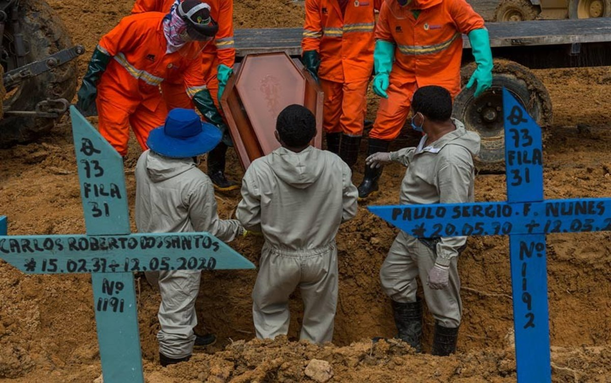
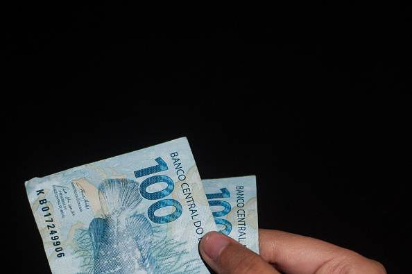

A pandemia de covid ainda está em curso
Covid-19 volta a crescer em diversos países. ‘Pandemia não acabou’, alertam cientistas
Indicadores de vários países mostram que a incidência de covid-19 volta a crescer, com aumento de internações e mortes. Rússia e Cingapura, por exemplo, vivem o pior momento da pandemia desde março de 2020. Contudo, são cenários distintos. Enquanto os russos possuem baixo percentual de vacinação, 33,6%, o país asiático tem 99,57% de pessoas completamente imunizadas. Em comum, os países deixaram de lado medidas de distanciamento social, entre outras ações protetivas. Cientistas alertam que uma tendência similar de piora pode chegar ao Brasil.
A melhora no cenário brasileiro, que veio junto com a vacinação, levou, por outro lado, ao relaxamento precoce em medidas de segurança, de acordo com cientistas. Eles alertam para patamares que seguem elevados de transmissão e mortes, e que, além disso, a situação continua recheada de incertezas. Em especial, pelo percentual insuficiente de vacinados; são cerca de 50%, enquanto a Organização Mundial da Saúde (OMS) indica ao menos 80% para uma situação mais confortável. “A pandemia ainda está em curso. Estamos avançando, mas não podemos negligenciar cuidados que ainda se fazem fundamentais”, afirmam os pesquisadores do Observatório da Covid-19 da Fundação Oswaldo Cruz (Fiocruz), em boletim divulgado na última sexta-feira (15).
A entidade revela que a letalidade no Brasil segue entre as mais preocupantes do mundo, em torno de 3%. Em alguns estados a situação é pior, como Roraima, com 14,3%; São Paulo, com 9,7%; e Rio de Janeiro, com 6,8%. De acordo com o Conselho Nacional dos Secretários de Saúde (Conass), o país soma 603.465 mortos, segundo com mais vítimas atrás apenas dos Estados Unidos, com pouco mais de 700 mil mortos e população 50% maior.
Hoje (18) o Conass reportou 183 mortes em 24 horas, sendo que às segundas-feiras existe uma subnotificação natural do sistema. Também foram reportados 7.446 novas infecções, somando 21.651.910 desde março do ano passado.

Levantamento mostra, em contrapartida, que o consumo de alimentos e bens duráveis deve voltar a crescer em breve
Situação financeira piorou para 78,5% dos brasileiros durante pandemia, diz estudo
Por conta das restrições econômicas durante a pandemia, o aumento no desemprego e a alta da inflação, 78,5% dos brasileiros afirmam que a situação financeira piorou durante a crise sanitária causada pelo novo coronavírus. É o que destaca um levantamento feito pela Bateiah, empresa especializada em consultoria e pesquisas, que contou com a participação de 1,4 mil pessoas em todo o país e tem um nível de confiança de 95%.
“A grande maioria dos brasileiros sente que sua situação financeira atual piorou no comparativo ao antes da pandemia. O número mostra que quase oito em cada dez pessoas tiveram uma queda econômica aos longos dos últimos meses compreendidos neste período de crise”, ressalta a pesquisa.
Segundo o estudo, a situação para 36,5% dos brasileiros piorou ‘muito’ durante a pandemia do novo coronavírus, enquanto 42% das pessoas perceberam uma piora, porém não muito acentuada. Apenas 21,4% da população verificou uma melhora nas finanças durante a pandemia de Covid-19.
Os brasileiros com menor poder aquisitivo sentiram mais a piora na situação financeira atual, de acordo com o levantamento.